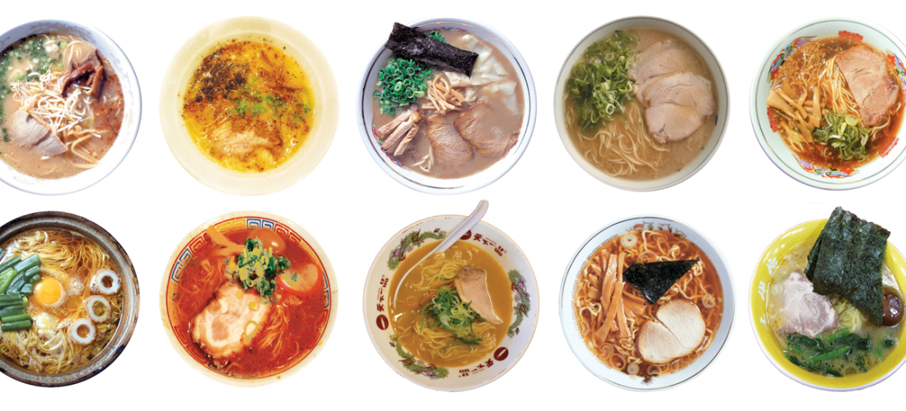

Ramen
Ahh Ramen… A staple amongst the financially challenged and sodium starved of the world. While the classic block of yellow wavy goodness is a household object now a days, there is a long and rich history behind how the dish originated and eventually ended up on our tables. Despite originating in China, there is almost a different style of Ramen for every Region in Japan! These styles differentiate themselves in a number of ways. First and foremost, the broth. Broth is the heart and soul of any bowl of ramen and can be parred in a myriad of different ways. Secondly, the noodles. The noodles are the vehicle on which the flavors of the broth reach your taste buds. Consequentially, for every style of broth there is a preferred style of noodle as well. And lastly, no bowl is complete without toppings. Coming in a wide variety of ingredients ranging from different meats to local/regional specialty ingredients, some toppings will match certain soups better than others. This site will serve as a sort of stepping stone into the world of Ramen
